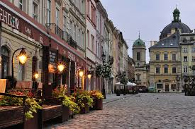
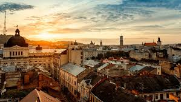

Lviv
Подорож до Львова: Місто Легенд та Культури
Львів - це одне з найчарівніших міст України, що знаходиться у західній її частині. Це місто, яке сповнене історії, архітектурних шедеврів та неповторної атмосфери. Кожен, хто відвідав Львів, залишається під враженням від його величі та неповторності.
Архітектурні Скарби
Львів славиться своєю величезною кількістю архітектурних пам'яток, що відображають його різноманітну історію. Серед них можна знайти кам'яниці різних епох, розкішні церкви та собори, старовинні палаці та міські вежі. Особливу увагу привертають площі Львова, такі як Ринок і Площа Ринок, де можна насолодитися кавою в затишних кафе, подивитися на місцевих майстрів та придбати унікальні подарунки.
Кулінарні Враження
Львів - це не лише культурний, але й кулінарний центр. Місто славиться своєю різноманітною кухнею, яка поєднує в собі впливи української, польської, єврейської та інших кухонь. У Львові можна скуштувати найсмачніші страви, починаючи від традиційних українських вареників та борщу, до вишуканих гастрономічних шедеврів у фешенебельних ресторанах.
Відпочинок та Розваги
Львів пропонує безліч можливостей для відпочинку та розваг. Від прогулянок у старовинному центрі міста до активного відпочинку в парках та скверах. Тут завжди є щось цікаве для кожного - від музеїв і галерей до атракціонів та парків розваг. Не дивно, що Львів завойовує серця мандрівників з усього світу. Це місто, де історія переплітається з сучасністю, а культурне надбання поєднується з неповторною атмосферою. Тож, відвідавши Львів, ви отримаєте незабутні враження, які назавжди залишаться з вами.
Фото мальовничого Львова